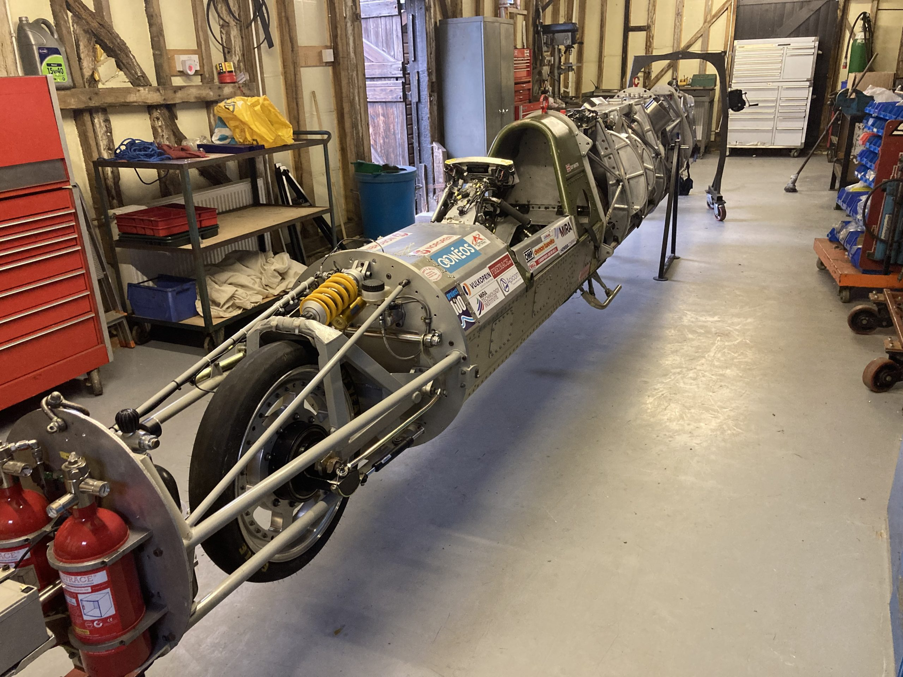
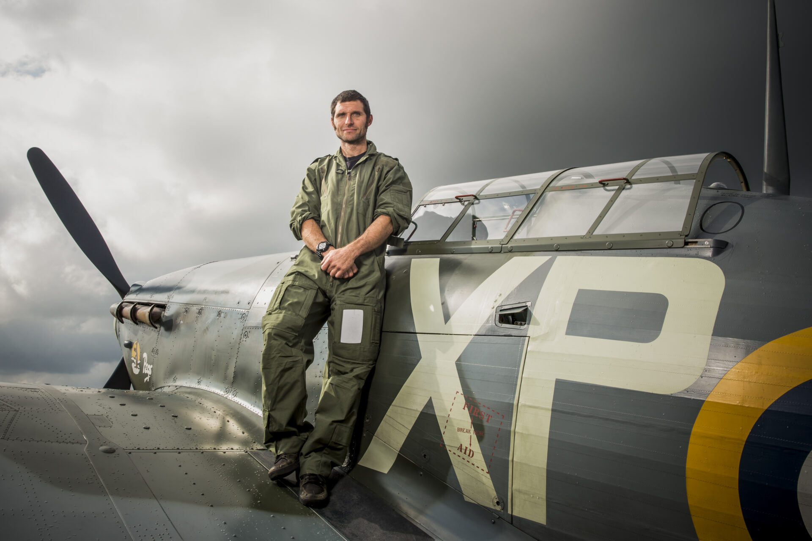

Guinness World Records recognised
Alex Macfadzean's Norton Rotary streamliner reached 200.9mph and earned official recognition.
British Engineering · Land Speed Record Challenge
Guy Martin will be at the controls as Spirit of GB sets out to break the Motorcycle World Land Speed Record, bring the title back to Britain, and become the first motorcycle to reach 400mph.
Spirit of GB is led by people the record books already know, and watched by the organisations that govern the sport.
Alex Macfadzean's Norton Rotary streamliner reached 200.9mph and earned official recognition.
The Auto Cycle Union has reported the planned record attempt in Bolivia.
Guy Martin has run the Triumph Streamliner on the Bonneville Salt Flats in Utah.
Built partly in tribute to land speed legends Don Vesco and Rob North.
Spirit of GB is a British-led motorcycle land speed record project created to challenge the limits of engineering, courage and national ambition.
The project is led by engineer and racer Alex Macfadzean and supported by a volunteer team with experience across motorcycle racing, motorsport, land speed record breaking, engineering and high-technology disciplines. The mission is singular. Break the Motorcycle World Land Speed Record, with Guy Martin at the helm.
Britain has not held the motorcycle world land speed record since 1937. Spirit of GB aims to bring that title home and put British engineering, determination and bravery at the centre of a world-record story.
A purpose-built, turbine-powered streamliner pushing materials, aerodynamics and control to their limit.
A proven pilot in Guy Martin, ready to take a British machine into the unknown.
Bringing the world record back to Britain after nearly nine decades.
At the heart of the project is a purpose-built streamliner motorcycle powered by a 1,200 shaft horsepower Rolls-Royce Gem gas turbine engine, engineered to carry a motorcycle past 400mph for the first time in history.

1,200shp Rolls-Royce Gem gas turbine engine driving the rear wheel through a validated transmission.
Aluminium monocoque with tubular reinforcement for rigidity and pilot protection.
Carbon fibre body shell shaped for minimum drag and high-speed stability.
Centre-hub steering paired with swingarm suspension for control at extreme speed.
Specialist wheels and tyres engineered for the loads and surface of a 400mph run.
Twin rear disc brakes plus a dual sequential parachute braking system.
The current official benchmark is 376.363mph, set by Rocky Robinson on the TOP 1 Ack Attack in 2010. Spirit of GB is being developed to beat that figure and push beyond it, to the 400mph barrier.
The record attempt is planned for the Salar de Uyuni salt flats, a vast, high-altitude salt surface the team regards as the ideal stage for a 400mph run. The ACU has reported that Spirit of GB's attempt on the existing 376.363mph record is planned for Bolivia, with the machine built by Alex Macfadzean and piloted by Guy Martin.

At the helmA rare combination of credibility, public profile and engineering understanding.
Spirit of GB names Guy Martin as its pilot, highlighting his Isle of Man TT background, his television work, and his previous experience piloting the Triumph Streamliner on the Bonneville Salt Flats in Utah.
A British engineer, former GP and Isle of Man TT sidecar racer, engine builder and land speed record specialist whose life has been shaped by motorcycles, speed and hands-on engineering.
Alex began his working life with a five-year apprenticeship as a commercial vehicle engineer, later working as a dyno engine calibrator at Ford Motor Company. In parallel, he built a racing career that started in motorcycle sprint racing, now more commonly known as drag racing, before moving into sidecar racing as a passenger with a number of drivers across UK circuits.
His engineering background is just as compelling. He built Weslake speedway engines, including work connected to world-class rider Zenon Plech, and later designed and developed motorcycle streamliners. After a serious road accident ended his sidecar racing career, Alex channelled his experience into land speed engineering, building a Norton Rotary-powered streamliner that achieved 200.9mph and earned Guinness World Records recognition.
His work also brought him into the orbit of Don Vesco, one of the legends of land speed racing. Alex supplied a T55 turbine engine for Vesco's Turbinator project and later worked in the United States with Vesco and renowned frame builder Rob North. Spirit of GB is being built partly in tribute to both men.
The project has already progressed through early running and systems checks. Here's the road to Bolivia.
First runs and validation of the machine's core systems.
The team has run the machine at around 160 to 170mph on the runway.
Transmission and engine validation under controlled load.
Continued build work and more seat time for Guy Martin ahead of the attempt.
The final international run at 400mph.
Spirit of GB is more than a speed attempt. It's a British engineering story, a human perseverance story, and a major awareness opportunity built around one of the UK's most recognisable motorsport figures.
We're seeking partners who can help with sponsorship, technical support, logistics, media reach and public awareness as Spirit of GB moves from testing to the record attempt. This is a chance to be associated with a British-built, turbine-powered streamliner, led by a proven engineer-racer, piloted by Guy Martin, and aiming to make history at 400mph.
From workshop to runway, a look at Spirit of GB taking shape. Tap any image to view it larger.
Whether you want to talk sponsorship, offer technical support, or simply follow the road to 400mph, we would like to hear from you.
Prefer email? Reach the team directly at info@spiritofgb.co.uk.